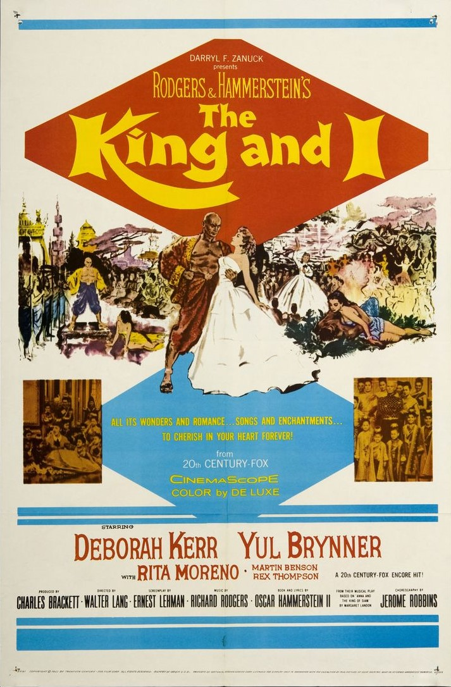

The King and I
29th Academy Awards
(Oscars 1957)
9 Nominations, 5 Awards
| Nominations | ||
|---|---|---|
| Category | Nominees | Result |
| Best Motion Picture | Charles Brackett | Nominated |
| Actor | Yul Brynner | Won |
| Actress | Deborah Kerr | Nominated |
| Directing | Walter Lang | Nominated |
| Cinematography (Color) | Leon Shamroy | Nominated |
| Art Direction (Color) | John DeCuir, Lyle R. Wheeler, Paul S. Fox, and Walter M. Scott | Won |
| Costume Design (Color) | Irene Sharaff | Won |
| Sound Recording | Carl Faulkner | Won |
| Music (Scoring of a Musical Picture) | Alfred Newman and Ken Darby | Won |